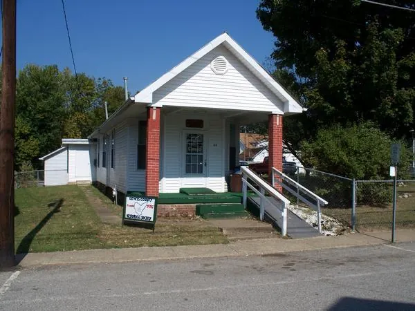

Lewis County history and genealogy, kept by volunteers since 1976
A research library for the county's cemeteries, marriages, census records and family stories, at 39 Market Street in downtown Vanceburg, Kentucky.
Open Friday and Saturday, 11 a.m. to 3 p.m.
Which book has your family's cemetery?
The 25 Lewis County Cemetery Books list 225 cemetery listings; a few names appear in more than one book. Each book gives the name of the cemetery and, where the stones can be read, each person's name, birth date and death date.
Or try: , ,
229 entries: 225 book listings plus 4 CDs and photo collections
Cemetery books are $12.00 each + $4.00 postage and handling. To order, mail a check or money order to the Lewis County Historical Society, P. O. Box 362, Vanceburg, KY 41179, or email the society.
On the shelves
Cemetery books
25 books of Lewis County cemeteries, plus CDs and photo collections of the stones.
Marriage books
Lewis County marriages from 1806 to 1962, in eleven volumes.
Federal census
The 1850 through 1930 census, transcribed in book collections.
Stories and history
Civil War stories, the 1937 flood, old remedies, family histories and cookbooks.
Come do your research on Market Street
The society is open to the public to help with historical and genealogical research. It is a library of its own, not related to the local public library.
- Hours
- Friday and Saturday, 11 a.m. to 3 p.m. In winter it may be closed any or all days due to bad weather.
- Meetings
- Third Saturday of each month at noon. Visitors are welcome.
- Address
- 39 Market Street, Vanceburg, KY 41179
